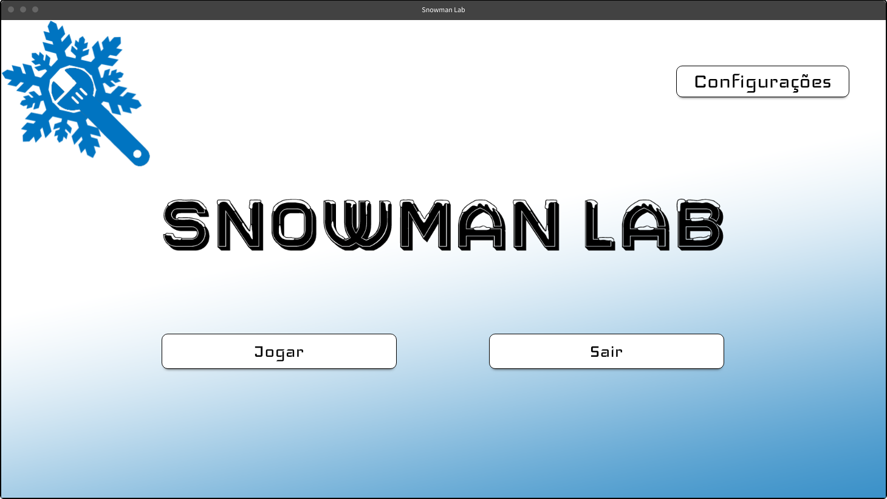
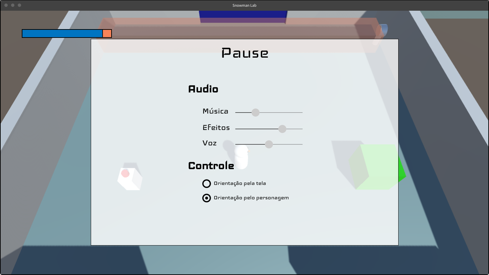

Snowman Lab
Esse projeto foi criado para testar a implementação de mecânicas em personagens 3D na Unity. Acidentalmente o personagem ficou com formato parecido com boneco de neve e como a ideia era criar mecânicas diversas, iniciei um processo de criação da história desse personagem e como justificar essas mecânicas. Hoje tenho esse projeto como meu trabalho de semestre da facudade de Jogos Digitais da FIAP
O boneco de neve foi escolhido para esse projeto pois a contrução de um boneco passa pela utilização de objetos diversos que podem ter utilidades. Um graveto usado como braços para agarrar e empurrar objetos, uma mola para acoplar em sua base e melhorar o pulo, um guarda-chuva nas costas para planar durante uma queda. As possibilidades são enormes.
Essa página do portfólio será atualizada conforme o projeto se desenvolve.
game design document pdf